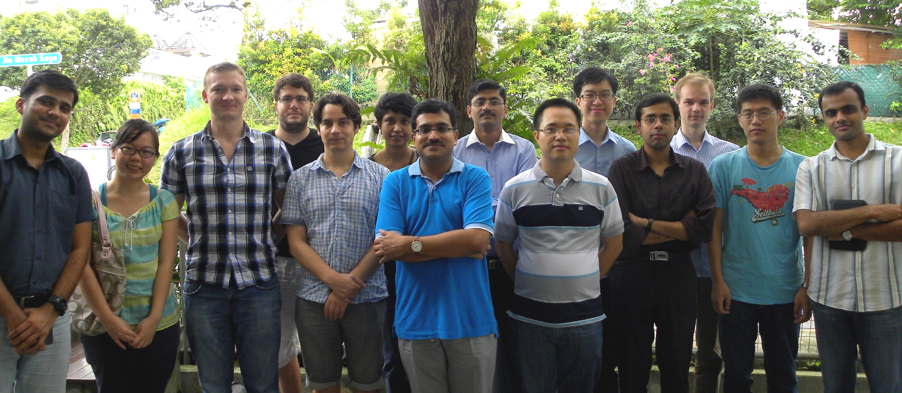
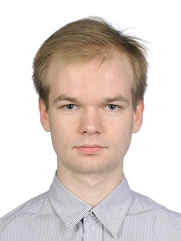

Website
Professor
School of Computing
National University of Singapore
E-mail: abhik(at)comp.nus.edu.sg
[Group Photo November 2012]

In photo, from right to left:
Front row: Sandeep Kumar, Dawei Qi, Sudipta Chattopadhyay, P.V. Thuan, Abhik Roychoudhury, Bruno C.d.S. Oliveira, Marcel Bohme, Shin Hwei Tan, Tushar Mehta
Back row: Sergey Mechtaev, Lee Kee Chong, Abhijeet Banerjee, R. Lavanya, Clement Ballabriga
Missing in the photo: Jooyong Lee (Yi).
Faculty Member
|
|
Abhik Roychoudhury
Website Professor School of Computing National University of Singapore E-mail: abhik(at)comp.nus.edu.sg |
Collaborating Faculty Members

|
Samarjit Chakraborty
Website Professor Institute for Real-Time Computer Systems Technical University of Munich E-mail: samarjit(at)tum.de |

|
Liang Zhenkai Website Associate Professor Department of Computer Science School of Computing National University of Singapore |

|
Tulika Mitra
Website Associate Professor Department of Computer Science School of Computing National University of Singapore E-mail: tulika(at)comp.nus.edu.sg |

|
P.S. Thiagarajan
Website Professor Department of Computer Science School of Computing National University of Singapore E-mail: thiagu(at)comp.nus.edu.sg |

|
Khoo Siau Cheng
Website Associate Professor Department of Computer Science School of Computing National University of Singapore E-mail: khoosc(at)comp.nus.edu.sg |

|
Deepak D'Souza
Website Associate Professor Dept of Computer Science and Automation Indian Institute of Science E-mail: deepakd(at)csa.iisc.ernet.in |
Post-doctoral Fellows
|
Bruno C.d.S. Oliveira Senior Research Fellow oliveira@comp.nus.edu.sg
|
|
Jooyong Yi (Lee) Research Fellow jooyong@comp.nus.edu.sg
|
|
Clement Ballabriga Research Fellow clementb@comp.nus.edu.sg
|
Current Graduate Students
|
Tan Shin Hwei PhD Student E-mail: shinhwei(at)comp.nus.edu.sg Research Interests: Testing .... |
Thuan P. V. Website PhD Student E-mail: shinhwei(at)comp.nus.edu.sg Research Interests: Embedded software analysis |
|
Marcel Bohme Website PhD Student E-mail: mboehme(at)comp.nus.edu.sg Research Interests: Testing of evolving programs |

|
Qi Dawei
Website PhD Student E-mail: dawei(at)comp.nus.edu.sg Research Interests: Program analysis, Software debugging |

|
Sandeep Kumar
Website PhD Student E-mail: sandeep(at)comp.nus.edu.sg Research Interests: Program Comprehension, Mining |

|
Sudipta Chattopadhyay
Website PhD Student E-mail: sudiptac(at)comp.nus.edu.sg Research Interests: Timing Analysis of Embedded Software |
| R.
Lavanya PhD Student E-mail: lavanya(at)comp.nus.edu.sg Research Interests: Mining, comprehension, Repair .... |
 |
Sergey Mechtaev Website PhD Student E-mail: mechtaev(at)comp.nus.edu.sg Research Interests: |
|
Abhijeet Banerjee PhD Student E-mail: abhijeet(at)comp.nus.edu.sg Research Interests: WCET analysis .... |
Past Graduate Students
Lei Ju(Ph.D.)
Timing analysis of Model-driven Software, Joint
supervision with
Samarjit Chakraborty, Graduated 2010.
First employment:
Associate Professor at Shandong University (China).
Vivy Suhendra
(Ph.D.) Memory
Optimizations for
Time-predictable
Embedded Software, Joint
supervision with Tulika
Mitra, Graduated 2009.
Awarded Microsoft
Research fellowship
(2006-07), First
employment: Researcher
at Institute for
Infocomm Research (I2R).
Ankit Goel
(Ph.D.) Validating
Visual Models of
Reactive Embedded
Systems, Sole
Supervision, Graduating
2009.
Awarded Dean's Graduate
Award 2008, First
employment:
Post-doctoral Research
Fellow at INRIA.
Tao Wang
(Ph.D.) Post-mortem
Dynamic Analysis for
Software Debugging, Sole
Supervision, Graduated
Feb 2008.
Adjudged the Best PhD
Thesis from School of
Computing, 2007-08.
Awarded Microsoft
Research fellowship
(2004-05), Presidential
Graduate Fellowship,
Associate at Morgan
Stanley.
Xianfeng Li
(Ph.D.)
Micro-architectural
Modeling for Timing
Analysis of Embedded
Software, Graduated
December 2005,
Co-supervised with
Tulika Mitra, Awarded
Dean's Graduate Award,
Lecturer at Peking
University.
Bach Khoa Huynh (M.Sc) Timing analysis of data cache behavior.
Liang Guo
(M.Sc.) Debugging
Statechart models via
Model-code Traceability,
Moved to CreditSuisse,
Singapore.